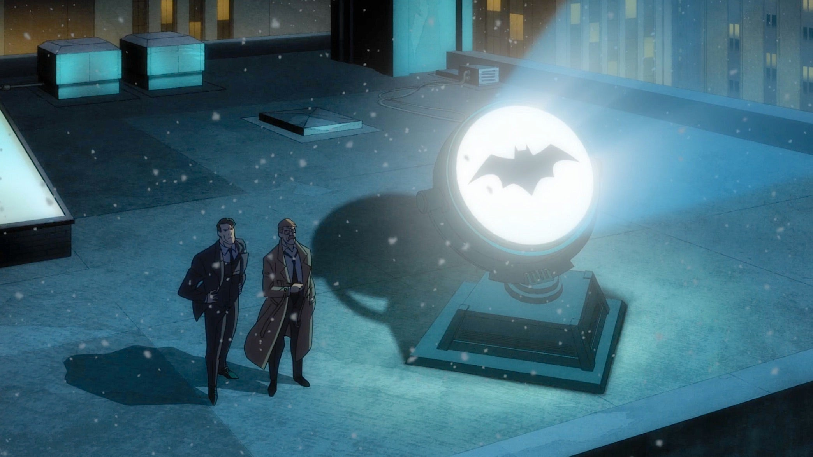

Batman: The Long Halloween, Part Two: Mantendo o nível
Ano de Lançamento: 2021
Duração: 1h 28min
Gênero: Super-herói
Nota: 8
Continuando o Longo Dia das Bruxas, algumas pistas levam Batman a investigar alguém bastante inesperado.
Mantendo o nível da parte 1, The Long Halloween, Part Two pode decepcionar um pouco na resolução de quem é o
assassino, mas traz um traço bonito e uma jornada recompensadora.
